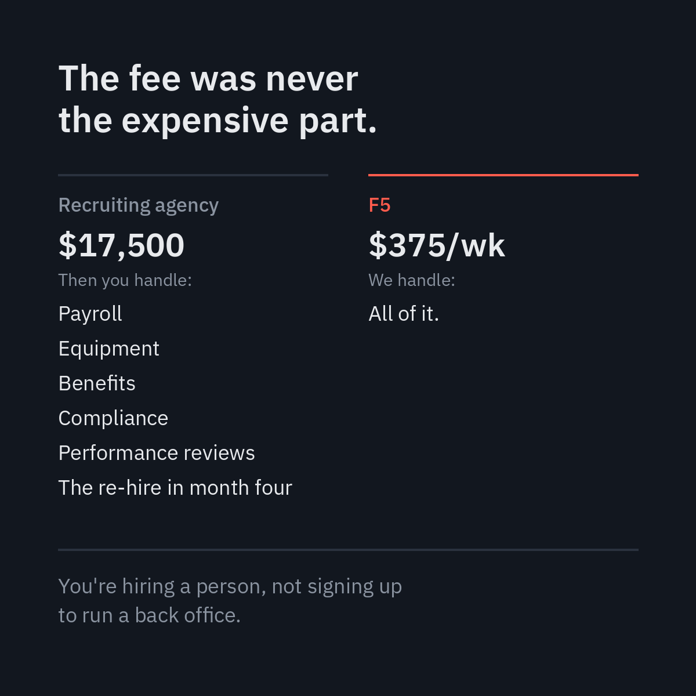
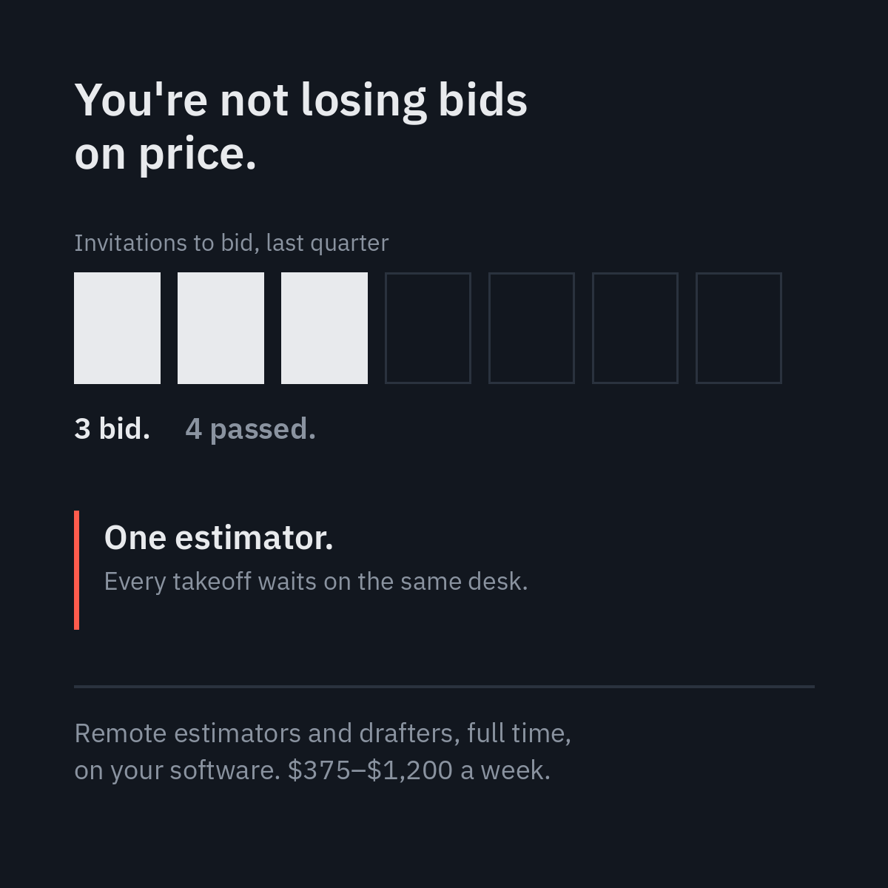
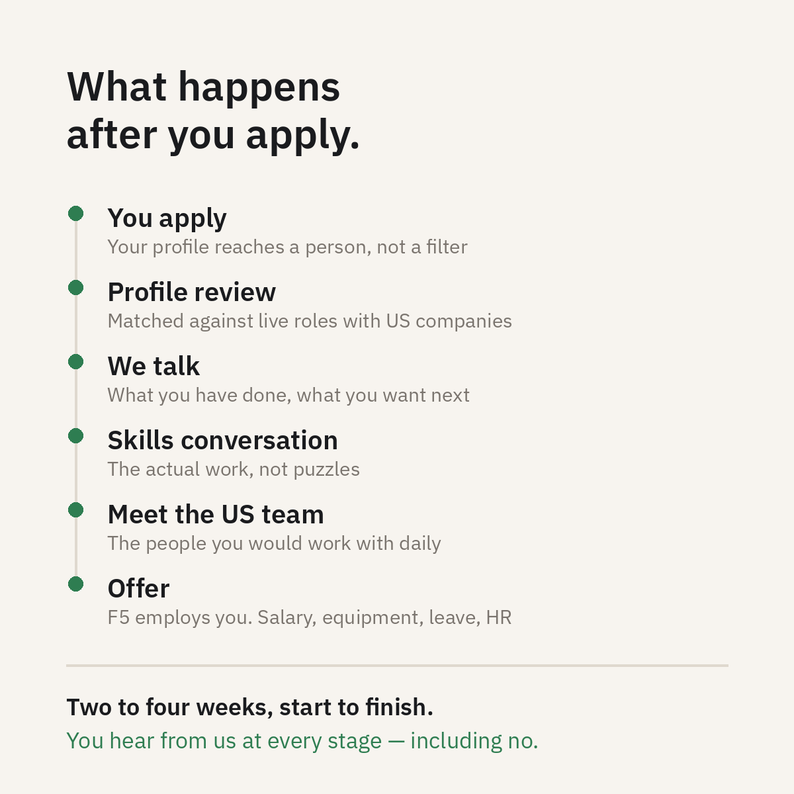

Three LinkedIn posts and two 30-second videos. Written for F5 Hiring Solutions and F5 Global Talent, which sell to opposite ends of the same transaction.
The decision
F5 Hiring Solutions talks to US business owners and operations leaders. F5 Global Talent talks to experienced professionals in Pune, Rajkot and Manila. One is buying, the other is being hired. They should not sound the same.
So the five pieces split three to Hiring Solutions and two to Global Talent. Hiring Solutions is the revenue side and has more to say in text; the employer brand does more work in video, where tone carries what copy can't.
Every claim below comes from F5's own public pages. Nothing about the company is invented.
F5 Hiring Solutions · LinkedIn post
The fee was never the expensive part
Owners who have used an agency remember the fee. They rarely price the thing that follows it — becoming an HR department for one person. This reframes the cost from a number to an ongoing obligation.
A recruiting agency charges 20 to 25% of first-year salary. On a $70,000 hire, that's around $17,500.
Then they're finished.
You're the one running payroll. Sourcing the laptop. Handling the leave requests, the performance conversations, the tax paperwork. And if it doesn't work out in month four, you're paying the fee again.
The placement fee was never the expensive part. The expensive part is that you just became an HR department for one person.
That's the gap F5 Hiring Solutions works in. Full-time remote professionals from India and the Philippines, employed by us, equipped by us, managed by us. You get someone in your standup every morning. We handle everything that happens around them.
$375 to $1,200 a week, all in. Shortlist in 7 to 14 business days. If someone isn't working out, we replace them, at no cost, however far in you are.
250+ US companies since 2017. 95% of placements still in seat.
You're hiring a person, not signing up to run a back office.

Six things stacked on one side, one line on the other. The asymmetry carries the argument before the words do.
F5 Hiring Solutions · LinkedIn post
You're not losing bids on price
Construction and AEC are on F5's own industry list and are the least expected vertical for a staffing post. A contractor reading about estimator capacity knows immediately whether the writer understands the work.
Most small contractors I've seen aren't losing bids on price. They're losing them on capacity.
You've got one estimator. Maybe two. Every invitation to bid lands in the same inbox, and somebody has to decide which ones are worth the takeoff and which quietly get let go. So you bid the three you're confident about and pass on the four you might have won.
Hiring a second estimator in the US means $85,000 plus benefits and three months to find one. On a business with lumpy revenue, that's a real bet.
There is another version of this. Estimators, drafters and project coordinators working remotely from India and the Philippines, full time, on your software and your schedule. Trained on takeoffs, submittals, RFIs and schedule updates. Employed and managed by F5, sitting in your morning call like anyone else.
$375 to $1,200 a week, all inclusive. Shortlist in 7 to 14 business days.
The question isn't whether you can afford a second estimator. It's how many bids you passed on last quarter because you didn't have one.

Four bids you didn't send, visible before a word is read.
F5 Global Talent · LinkedIn post
What happens after you apply
The reason good candidates don't apply isn't rejection, it's silence. Answering that directly — with the process, the timeline, and a promise to reply either way — is the whole post.
The worst part of job hunting isn't rejection. It's silence.
You send the application. Nothing. You follow up. Nothing. Three weeks later you're still refreshing an inbox, wondering whether anyone opened it.
So here is exactly what happens when you apply to F5 Global Talent, start to finish.
You apply. Our team reviews your profile against live roles with US companies. If it's a fit, we talk — about what you've actually done, what you want next, what you're paid now. Then a skills conversation. Then you meet the US team you'd be working with. Then an offer.
Two to four weeks, application to offer. You hear from us at every stage, including when the answer is no.
And if you join: F5 employs you. Not a contract, not an invoice you chase each month. Salary on a fixed date, equipment, HR, leave, a manager here who knows your name. You work day to day with a US company. We stay your employer.
500+ professionals placed. 98% are still in their roles past the first 90 days.
We're hiring across six career paths in Pune, Rajkot and Manila.
You'll hear back either way. That's the part we can promise.

Same typeface and structure as the two above, a different world. The brand split rendered rather than asserted.
F5 Hiring Solutions · 30-second video
Four ways to add someone to your team
Four options, one claim each, hard cuts. The first three get a line apiece and F5 gets four — the imbalance is the argument. Built as motion graphics rather than generated video, because text is where generative models fail.
Time
Voiceover
On screen
0–4s
Four ways to add someone to your team.
Four thin rules draw in
4–9s
A recruiting agency finds you a person, charges you twenty percent of their salary, and leaves.
Agency — Finds. Charges. Leaves.
9–14s
A freelance platform gives you someone with four other clients.
Freelance platform — Part of their week.
14–19s
An EOR handles the paperwork. But you still have to find the person yourself.
EOR — You still do the hiring.
19–26s
F5 sources them, employs them, equips them, manages them. Full time, on your schedule. Three seventy-five to twelve hundred a week, all in.
F5 — four lines stack in, price lands last
26–30s
Shortlist in two weeks. Replacement any time, free.
End card
F5 Global Talent · 30-second video
Your team is a US company. Your employer is F5.
The thing candidates find confusing is also the thing that reassures them, so the video spends its first half on the fear and its second half resolving it. Environments and hands rather than synthetic faces — uncanny people undercut the trust an employer-brand film is built to earn.
Time
Voiceover
On screen
0–5s
If you work remotely for a company abroad, you already know the fear.
Desk before dawn, screen light
5–11s
Will the money come this month. Who do I ask for leave. What happens if the contract just ends.
Words appear as they're said
11–19s
At F5, you work with a US company every day. But F5 employs you. Salary on a fixed date. Equipment. Leave. HR. A manager in your own city.
Your team: a US company. Your employer: F5.
19–26s
Five hundred professionals placed. Ninety-eight percent still in their role after ninety days.
Both figures, plainly set
26–30s
Hiring now in Pune, Rajkot and Manila.
End card
Tools and prompts
Piece
Tools
Notes
Posts 1–3, copy
Claude
Written against F5's public pages. Claims verified against both live sites before publishing.
Post graphics
Python / Pillow, IBM Plex Sans
Generated from a parametric script rather than a template, so wording and format changes re-render rather than get patched.
Video 4
Motion graphics, assembled in InShot
No generative video. Four claims on cards is where these models mangle text.
Video 5
Generated b-roll, assembled in InShot
Environments only, no synthetic people.
Both voiceovers
Recorded, not synthesised
My own voice. Normalised to −16 LUFS with 1.5 dB of peak headroom.